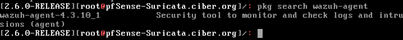
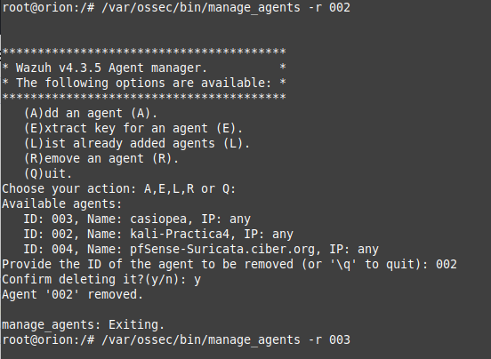

HIDS Wazuh
1. Instalación del HIDS Wazuh
1.1 Instalar Wazuh
Podemos instalar wazuh server en el cloud o en un equipo local.
1. Wazuh Cloud (14 días trial).
2. Instalar Wazuh en Ubuntu Server. Para este caso, se instala virtualizado en KVM, donde el nombre del servidor es orion y su ip la 192.168.122.97.
1. Ubuntu server virtualizado en KVM
2. Instalar wazuh server
root@orion:/# curl -sO https://packages.wazuh.com/4.3/wazuh-install.sh && sudo bash . /wazuh-install.sh -a
Al finalizar hay que copiar el password que ha generado:
- User: admin
- Password: o8.WH..A.w463dOpwUT25866eUei2Ml7
3. Iniciar y habilitar Wazuh
Una vez instalado, hay que iniciarlo y habilitarlo:
root@orion:/# systemctl daemon-reload
root@orion:/# systemctl enable –now wazuh-manager
root@orion:/# systemctl status wazuh-manager
4. Acceso al panel
Para acceder: https://192.168.122.97/
5. Consultar credenciales
Para consultar las credenciales de los usuarios de wazuh, el comando es:
root@orion:/# tar -O -xvf wazuh-install-files.tar wazuh-install-files/wazuh-passwords.txt
A continuación se describen los pasos para implementar en agente wazuh en PfSense.
Paso 1. Hay que instalar el agente wazuh en pfsense. Para ello, hay que acceder a la consola de pfsense y habilitar los repositorios de paquetes de FreeBSD. Hay que establecer la directiva "enabled" a "yes" en el fichero /etc/pkg/FreeBSD.conf.
Paso 2. Hay que modificar las directivas del fichero /usr/local/etc/pkg/repos/FreeBSD.conf:
- "FreeBSD: { enabled: no }" a "FreeBSD: { enabled: yes }"
Paso 3. Hay que modificar las directivas del fichero /usr/local/etc/pkg/repos/pfSense.conf:
- enabled: no" a "enabled: yes".
Paso 4. Los paquetes de Wazuh no están disponibles en los repositorios oficiales de pfSense. Por lo tanto, la única forma de poder instalar el agente Wazuh en pfSense es mediante el uso de repositorios oficiales de FreeBSD.
/root: pkg update
A continuación, buscamos si hay disponible un paquete agente wazuh, el comando es:
/root: pkg search wazuh-agent

Para este caso, devuelve que sí se tiene un agente. Lo instalamos con el siguiente comando:
/root: pkg install wazuh-agent-4.3.10_1
Paso 5. Una vez instalado, hay que realizar unas configuraciones, es decir, configurar donde está el servidor de wazuh. Para ello, hay que habilitar y conectar el agente.
Editamos el fichero /usr/local/etc/rc.d/wazuh-agent y cambiamos la línea {wazuh_agent_enable:="NO"}) a {wazuh_agent_enable:="YES"})
/root: vi /usr/local/etc/rc.d/wazuh-agent
A continuación, hay que editar el fichero /var/ossec/etc/ossec.conf y añadir la ip en la sección server, que para este caso, es la 192.168.122.97.
/root: vi /var/ossec/etc/ossec.conf
<server>
<address>WAZUH-MANAGER-IP-ADDRESS</address>
</server>
A continuación, hay que agregar registros de extracción de pfSense para monitorizar. Para este caso de ejemplo, además de los archivos de registro predeterminados monitorizados por Wazuh de forma predeterminada; vamos a agregar algunos más y son los siguientes:
<localfile>
<log_format>syslog</log_format>
<location>/var/log/openvpn.log</location>
</localfile>
<localfile>
<log_format>syslog</log_format>
<location>/var/log/system.log</location>
</localfile>
<localfile>
<log_format>syslog</log_format>
<location>/var/log/gateways.log</location>
</localfile>
<localfile>
<log_format>syslog</log_format>
<location>/var/log/userlog</location>
</localfile>
<localfile>
<log_format>syslog</log_format>
<location>/var/log/suricata/*/eve.json</location>
</localfile>
Paso 6. Habilitar e iniciar el agente de Wazuh
/root: /var/ossec/bin/agent-auth -m 192.168.122.97
Si se observa la figura superior, la salida del comando nos indica que se ha recibido la key válida. Si se accede al front end de wazuh, se puede observar que ya aparece el agente de pfsense.
Ahora, hay que iniciar el agente de Wazuh y habilitar el inicio del mismo en el arranque.
/root: sysrc wazuh_agent_enable="YES"
/root: /var/ossec/bin/wazuh-control start
Si se accede al front end de wazuh, se puede observar que ya está activo el agente de pfsense.
Si se conecta con un wazuh manager en el cloud (ejemplo: https://13zzcpbxfvj6.cloud.wazuh.com), en el comando /var/ossec/bin/agent-auth -m ip-serv-wazuh, hay que poner -P ENROLLMENT_PASSWORD. Para obtener este password, hay que ir a Wazuh → Agents → Deploy new agent → Debian/Ubuntu. En el punto 5, hay que seleccionar Show password para que aparezca en claro en el comando de integración del agente. Para este caso, el passord es: ‘rrzNJsh97AUSg3BzHxQtbiJOyENstBjfq’. Ejemplo: El comando para integrar un equipo basado en debian para arquitectura de 64 bits sería:
curl -so wazuh-agent-4.3.5.deb https://packages.wazuh.com/4.x/apt/pool/main/w/wazuh-agent/wazuh-agent_4.3.5 -1_amd64.deb
&& sudo WAZUH_MANAGER='13zzcpbxfvj6.cloud.wazuh.com' WAZUH_REGISTRATION_PASSWORD='rzNJsh97AUSg3BzHxQtbiJOyENstBjfq' dpkg -i . /wazuh-agent-4.3.5.deb
13zzcpbxfvj6.cloud.wazuh.com es la url del wazuh en el cloud.
2. Registrar agente Wazuh en Kali Linux
En este punto, vamos a añadir un nuevo agente, para este caso de ejemplo, un equipo Kali.
Para añadir un nuevo agente de un equipo basado en debian, las acciones a realizar son las siguientes:
Acceder a: Wazuh → Agents → Deploy new agent → Debian/Ubuntu.
Una vez se pulsa en 'Deploy new agent', hay que cumplimentar los siguientes campos:
- Seleccionar → Debian.
- Seleccionar arquitectura → 64 bits.
- Wazuh server address → 192.168.122.97
- Assign the agent to a group → Default
- Install and enroll the agent → Hay que ejecutar el siguiente comando en el equipo a integrar.
curl -so wazuh-agent-4.3.5.deb https://packages.wazuh.com/4.x/apt/pool/main/w/wazuh-agent/wazuh-agent_4.3.5-1_amd64
.deb && sudo WAZUH_MANAGER='192.168.122.97' WAZUH_AGENT_GROUP='default' dpkg -i ./wazuh-agent-4.3.5.deb

Una vez se han cumplimentado los campos, se habrá generado el comando a ejecutar en Kali para desplegar el agente.
(root@kali-Practica4)-[~] curl -so wazuh-agent-4.3.5.deb https://packages.wazuh.com/4.x/apt/pool/main/w/wazuh-agent/wazuh-agent_4.3.5-1_amd64
.deb && sudo WAZUH_MANAGER='192.168.122.97' WAZUH_AGENT_GROUP='default' dpkg -i ./wazuh-agent-4.3.5.deb
A continuación, habilitamos e iniciamos el servicio:
(root@kali-Practica4)-[~] systemctl daemon-reload
(root@kali-Practica4)-[~] systemctl start wazuh-agent
(root@kali-Practica4)-[~] systemctl enable wazuh-agent
(root@kali-Practica4)-[~] systemctl status wazuh-agent
Si accedemos al panel de Wazuh, podemos observar que el equipo ha sido reconocido.
Si accedemos a los datos del agente.

3. Registrar agente Wazuh en Windows Server
Para añadir un nuevo agente de un equipo basado en Windows, las acciones a realizar son las siguientes:
Wazuh → Agents → Deploy new agent →Windows.
Una vez se pulsa en 'Deploy new agent', hay que cumplimentar los siguientes campos:
- Seleccionar → Windows.
- Wazuh server address → 192.168.122.97
- Assign the agent to a group → Default
- Install and enroll the agent → Hay que ejecutar el siguiente comando en el equipo a integrar.
Invoke-WebRequest -Uri https://packages.wazuh.com/4.x/windows/wazuh-agent-4.3.5-1.msi
-OutFile ${env:tmp}\wazuh-agent-4.3.5.msi; msiexec.exe /i ${env:tmp}\wazuh-agent-4.3.5.msi
/q WAZUH_MANAGER='192.168.122.97' WAZUH_REGISTRATION_SERVER='192.168.122.97' WAZUH_AGENT_GROUP='default'
Accedemos a la máquina virtual KVM de Windows Server 2019 y ejecutamos el siguiente comando:
PS C:\Users\Administrador> Invoke-WebRequest -Uri https://packages.wazuh.com/4.x/windows/wazuh-agent-4.3.5-1.msi
-OutFile ${env:tmp}\wazuh-agent-4.3.5.msi; msiexec.exe /i ${env:tmp}\wazuh-agent-4.3.5.msi
/q WAZUH_MANAGER='192.168.122.97' WAZUH_REGISTRATION_SERVER='192.168.122.97' WAZUH_AGENT_GROUP='default'
Una vez ejecutado el comando en powershell, hay que editar el fichero c:\Program Files (x86)\ossec-agent\ossec.conf y poner registry_enabled NO y asegurarse que la ip del manager sea la correcta.
Por último, hay que iniciar el agente.
PS C:\Users\Administrador> NET START WazuhSvc
Si accedemos al panel de Wazuh, podemos ver que ya se tiene el agente activo.
4. Comprobar reglas
Desde el equipo Kali, ejecutamos el ataque hping3 sobre la ip de la LAN 192.168.100.1.
Si observamos en el apartado Discover de Wazuh, vemos que se ha detectado el ataque a la raíz de la regla creada en suricata:
#Detección DoS
alert tcp any any -> $HOME_NET 80 (flags: S; msg:"Posible Ataque DoS Type : SYNflood"; flow:stateless; sid:1000001; detection_filter:track by_dst, count 20, seconds 10;)
Como se observa en la graica, se han detectado más de 6.000 eventos y que corresponden al ataque hping3.
Si accedemos a un evento en concreto, podemos observar el texto de la regla.
5. Eliminar agentes
Para eliminar un agente, hay que utilizar el comando manage_agents con la opción -r y el id del agente a eliminar. Ejemplo, para eliminar el agente 002, el comando es:
root@orion:/# /var/ossec/bin/manage_agents -r 002

Referencia:
En el siguiente vídeo, se describe el sistema en producción
Obra publicada con Licencia Creative Commons Reconocimiento No comercial Compartir igual 4.0